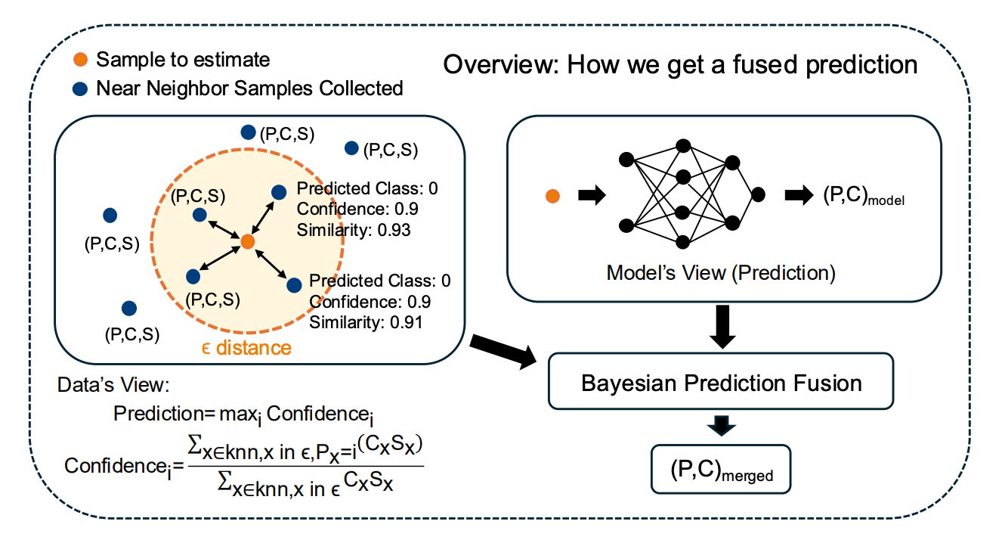

Info-Coevolution: An Efficient Framework for Data Model Coevolution
ICML 2025 · PMLR 267:50384–50396, 2025
Abstract
Machine learning relies heavily on data, yet the continuous growth of real-world data poses challenges for efficient dataset construction and training. A fundamental yet unsolved question is: given our current model and data, does a new data (sample/batch) need annotation/learning? Conventional approaches retain all available data, leading to non-optimal data and training efficiency. Active learning aims to reduce data redundancy by selecting a subset of samples to annotate, while it increases pipeline complexity and introduces bias. In this work, we propose Info- Coevolution, a novel framework that efficiently enables models and data to coevolve through online selective annotation with no bias. Leveraging task-specific models (and open-source models), it selectively annotates and integrates online and web data to improve datasets efficiently. For real-world datasets like ImageNet-1K, Info- Coevolution reduces annotation and training costs by 32% without performance loss. It is able to automatically give the saving ratio without tuning the ratio. It can further reduce the annotation ratio to 50% with semi-supervised learning. We also explore retrieval-based dataset enhancement using unlabeled open-source data. Code is available at https://github.com/NUS-HPC-AI- Lab/Info-Coevolution/.
Overview
Online selective annotation lets data and models coevolve while reducing unnecessary labeling and training.

32% lower annotation & training cost on ImageNet-1K with no performance loss
Citation
Ziheng Qin; Hailun Xu; Wei Chee Yew; Qi Jia; Yang Luo; Kanchan Sarkar; Danhui Guan; Kai Wang; Yang You. (2025). Info-Coevolution: An Efficient Framework for Data Model Coevolution. Proceedings of the 42nd International Conference on Machine Learning, PMLR 267, 50384–50396. https://proceedings.mlr.press/v267/qin25h.html
BibTeX:
@inproceedings{infocoevolution2025,
title = {Info-Coevolution: An Efficient Framework for Data Model Coevolution},
author = {Ziheng Qin and Hailun Xu and Wei Chee Yew and Qi Jia and Yang Luo and Kanchan Sarkar and Danhui Guan and Kai Wang and Yang You},
year = {2025},
url = {https://proceedings.mlr.press/v267/qin25h.html},
booktitle = {Proceedings of the 42nd International Conference on Machine Learning},
volume = {267},
pages = {50384--50396},
publisher = {PMLR}
}